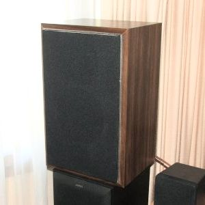
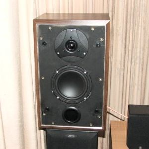
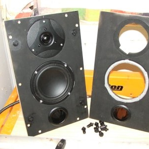
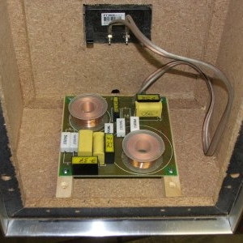
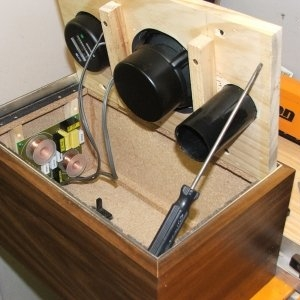
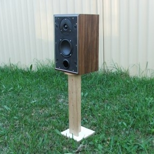
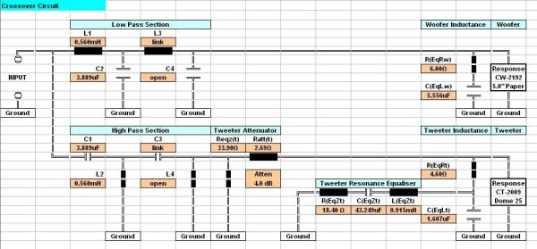

|
NAVIGATION
TOP of Page
MAIN Page
HOME Page
HP STANDMOUNT
About the Speaker
Speaker Design
Listening Tests
Specifications
Crossover Network
|
About the Loudspeaker
|

The finished speaker
|

Speaker front without grille
|
The High Performance Standmount is a compact two way bass reflex loudspeaker with superior acoustic qualities,
capable of exceeding the performance of well known commercial speakers.
TOP
MAIN
HOME
Designing and Building the Loudspeaker
This loudspeaker began life as a Sony model SS-20 bookmount loudspeaker, given to me by a friend.
It was part of a Sony mini HiFi system. I thought I could improve the sound of the speakers by
replacing the paper coned drivers and the single capacitor crossover network.
The cabinet is of 13 litres volume. The new baffle is a piece of 18mm pine measuring 370mm high by 220mm wide,
cut using a circular saw with the mounting holes either drilled with a large diameter hole cutting drill, or
carefully jigsawn. All surfaces were then sprayed matt black to be invisible behind the grille. The bass driver
is sealed with speaker sealant (Jaycar CF-2762) to prevent leakage, while the tweeter is intimately mounted on
the flat cutout produced by a circle cutting router. Note the rectangular cutout for the tweeter terminals.
The drivers are from Jaycar - a Response 5" Shielded paper cone bass/midrange (Jaycar CW-2192) and a Response
1" High Performance Dome Tweeter (Jaycar CT-2009). The bass driver was chosen due to suitability for this volume
of enclosure and the tweeter due to the low resonance frequency. The port is 50mm diam and 100mm long (Jaycar CX-2680).
The crossover network is a 12dB/octave Linkwitz-Riley at 3410Hz, designed from an Excel spreadsheet I wrote.
All components are within 1% of the values from the calculations - note the measured values written on the capacitors.
The tweeter section has a 4dB attenuator for level and impedence matching. Voice Coil inductance equalisation is applied
to both drivers. The circuit board is a Jaycar CX-2605 and the Jaycar PT-3006 speaker terminals screw down tightly and
will take either cables or plugs, in preference to spring loaded terminals.
The crossover network is placed in the ceiling of the enclose to avoid space conflicts with the port. I have mounted it
on two wooden rails, which spaces the underneath soldered joints away from the internal wall and adds rigidity to the
enclosure. The baffle is also strengthened by two cross braces. The cabinet will be closed once a fibreglass pillow,
courtesy the original Sony setup, is placed against the rear and floor of the enclosure to reduce standing waves.
Also note the solidity of the cabling to the drivers.
|

Drivers on Front Baffle
|

Crossover in Bottom Panel
|
|

Baffle and Crossover network
|

Speaker on Test Stand
|
TOP
MAIN
HOME
Listening to the Loudspeaker
The speaker underwent testing without the grille, being set up in the lounge room for listening tests.
It has a clear midrange and treble, plus effective if not deep bass. A-B Testing against a Bowers and
Wilkins DM-309 floor standing model reveals much better definition and sound staging, plus the transient
response and minimal overhang to reproduce cymbals effectively. Both human voice and piano are portrayed
with exceptional clarity.
This is an impression of what the finished speaker would appear as, if featured singularly, rather than
amongst the speaker collection in the lounge room. The speaker is now a vast improvement, acoustically
and visually, over the previous occupation of the cabinet by the paper coned Sony drivers.
The speaker was finished with the application of a grille and grille cloth. The grille is a 1/4" fibre
board sheet, cut out with circular holes for each driver and close mounted to the baffle on four speaker
grille clips (Jaycar CF-2761). The grille cloth (Jaycar CF-2752) is acoustically transparent and glued
plus stapled to the rear of the grille. All this beast now requires is a personalised identification lable.
TOP
MAIN
HOME
Loudspeaker Specifications
|
Specifications :
|
Two Way Bass Reflex Stand Mount
|
|
Dimensions :
|
255mm(w), 200mm(d), 400mm(h)
|
|
Bass Enclosure :
|
13L Braced and Lined
|
|
Freq. Response :
|
50-22,000hz @ -3dB
|
|
Efficiency :
|
88dB SPL @ 1W @ 1m
|
|
Impedence :
|
6.0 ohms typical
|
|
Power Handling :
|
50W rms
|
|
Crossover :
|
3,410hz 2nd Order Linkwitz Network
|
|
Imp. Correction :
|
Woofer and Tweeter
|
|
Bass Driver :
|
Response 125mm Bass/Mid Poly cone (Jaycar CW-2192)
|
|
Tweeter Driver :
|
Response 25mm dome (Jaycar CT-2009)
|
TOP
MAIN
HOME
Crossover Network
 Circuit for the Crossover Network
The Tweeter Resonance Equaliser Network was not included.
TOP
MAIN
HOME
|